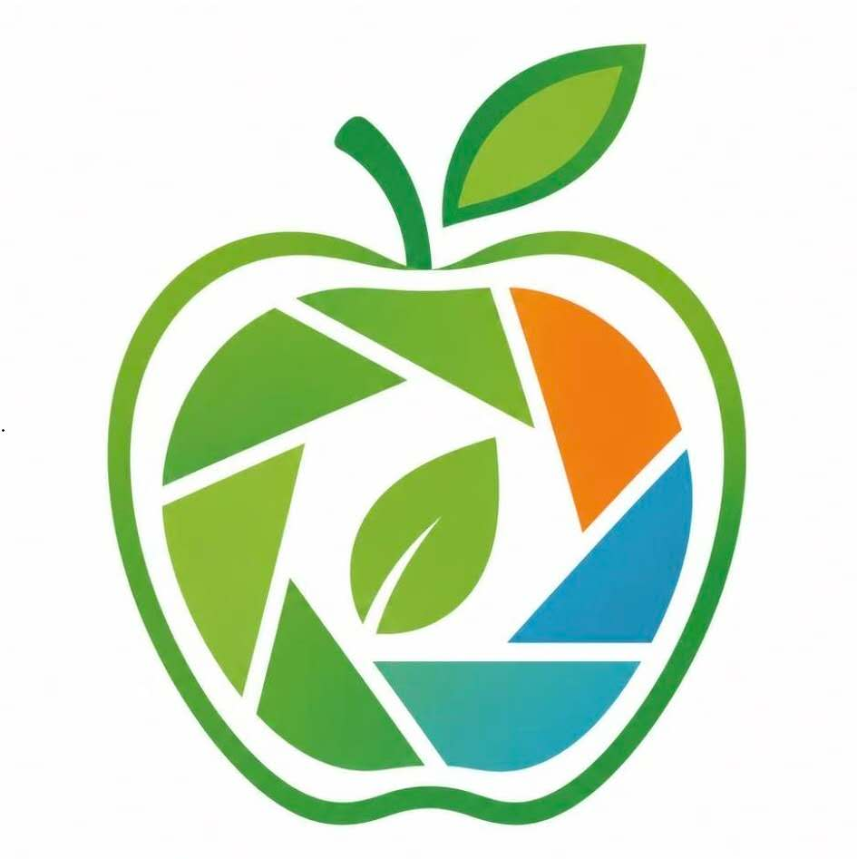
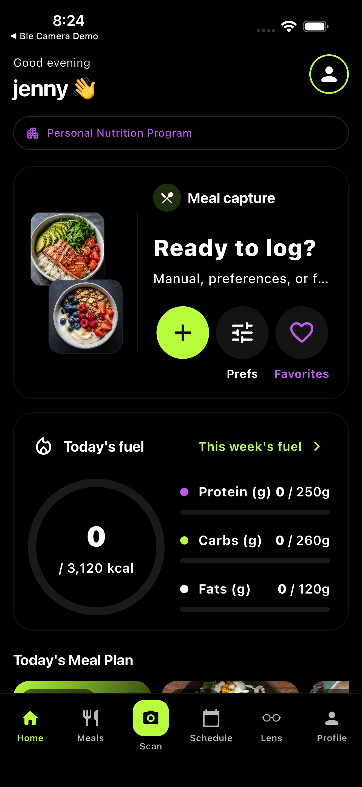
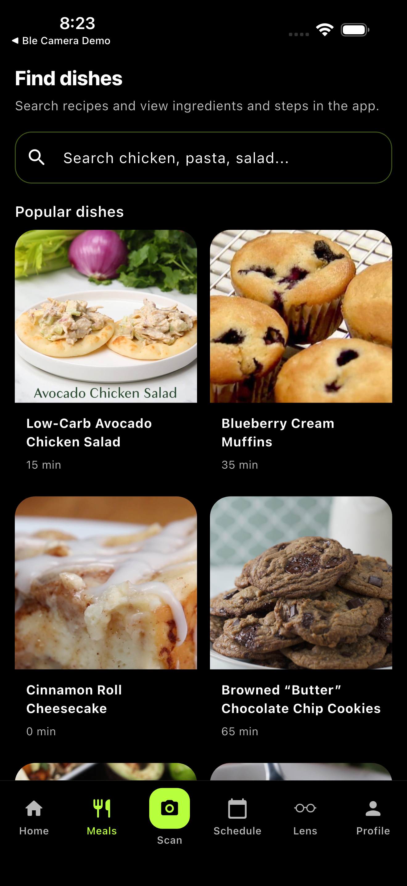
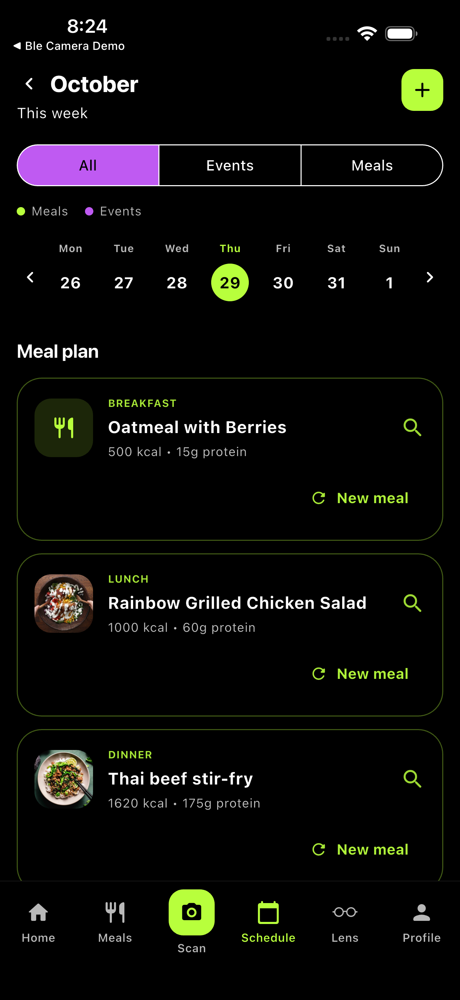
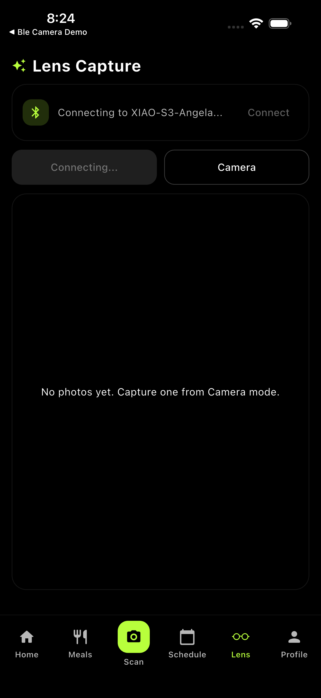
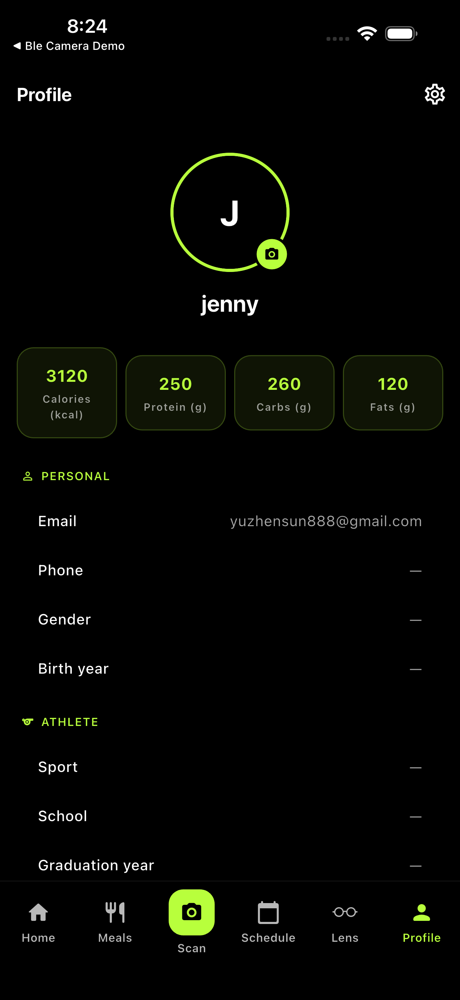

简单且易获取的营养信息
用清晰的营养信息，支持每天的饮食选择。
欢迎来到 VITASTE
由 Angela Li 创建 — VITASTE 创始人
VITASTE 帮助用户更好理解饮食，并做出更健康的选择。
面向运动员、学生，以及任何想建立健康习惯的人。
很高兴你来到这里。
VITASTE 最初面向运动员，后来扩展为服务更多人。
它支持日常营养决策，也包含对糖尿病友好的目标支持。
用清晰的营养信息，支持每天的饮食选择。
提供符合每位用户作息与目标的个性化建议。
你好，我是 Angela Li， VITASTE 的创始人。 我创建 VITASTE，是因为我相信健康指导应该是个性化、实用、并带来鼓励的，而不是让人困惑或有压力。
VITASTE 最初是为了帮助运动员提升营养认知。 随着持续开发，我意识到这种支持对更多人同样重要：例如学生、家庭、正在建立健康习惯的人，以及正在管理糖尿病等健康状况的人。
我的目标是打造真正能帮助用户在日常生活中做出更明智选择的工具。 我非常重视把复杂的营养信息转化为简单、可执行、真正能用的建议。
我热衷于把科技与健康结合，并坚持包容、以人为本的设计方式。 我希望通过 VITASTE，让更多人在健康旅程中感到更自信、更有支持感，也更有行动力。
感谢你成为 VITASTE 旅程的一部分。 如果你有任何问题，欢迎通过页面底部邮箱联系我。

VITASTE 结合食物识别与简明建议，帮助用户逐步建立健康习惯。
READY 启动拍摄流程。SHOOT 按需请求新图像。从拍照到健康建议的简明流程：
ESP32-S3 采集食物照片。
图像通过 BLE 传输到 App。
App 生成营养洞察（可选 AI）。
用户获得可执行的下一步建议。
以下为 NutriLens 在 iPhone 模拟器中的真实界面。





IMGH + total + 分片数量 + payload_size
chunk = uint16 index + JPEG bytes
IMGE + total 确认传输结束帧
0x01 ACK 窗口 / 重传控制
0x02 SHOOT 拍摄请求
0x03 READY 握手
0x04/0x05/0x06 描述文本流
0x07 简短错误消息（OLED 版本）
睡眠模式为可选项，可在需要时降低活动频率。
VITASTE 将营养数据转化为日常可用的实际支持。